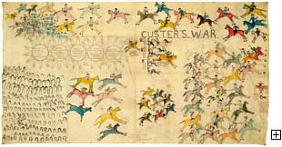

|

|
|

Herd of grazing bison on the vast plains
Enlarge |
The Establishment of Reservations
During the last half of the 19th century, hundreds of battles were waged on the plains
and to the west. Lives of both American Indians and Euro-Americans were lost, families
were displaced, and treaties were made and broken. In the view of the government, the
ultimate solution in the West, as had already occurred in the East, was to confine the
Indians to reservations. Reservations are areas of usually very poor lands with specific
boundaries, to which specific tribes were assigned to live. The assignments were made
with little sensitivity. Tribes that were traditional enemies were sometimes placed
together on a single reservation.
In an attempt to control the Plains Indians, the U.S. government encouraged the
slaughter of the wild buffalo, the primary food source of the Native people. Once
exterminated, the government believed that the Indians would have no choice but to
willingly move on the reservations where they would receive food rations. Eventually,
that assumption proved to be correct, but not before the Plains people waged a valiant fight. |
| |

One Bull; Hunkpapa Lakota, Custer's War, about 1900, The Minneapolis
Institute of Arts, The Christina N. and Swan J. Turnblad Memorial Fund, 94.47.1
Euro-American & Native American military historians still discuss the
Battle of Little Big Horn, but accounts through Indian eyes are relatively rare. One Bull fought
in the 1876 battle & later painted this comprehensive view of events.
|
The Final Battles
In a treaty negotiated in 1868 with Red Cloud, the chief of the
Oglala
Lakota band, the
government recognized the Black Hills in South Dakota as part of the
Sioux
reservation.
Because gold deposits were found there, the government unsuccessfully attempted to
purchase the land from the Indians. The Black Hills was a sacred place to the Lakota people.
The struggle for the Black Hills culminated in 1876 at the Battle of Little Bighorn where
the combined forces of several Sioux tribes defeated General George Custer and the U.S.
Army's 7th Cavalry. Although the Lakota won, the Army pursued them relentlessly, and
ultimately their ability to resist was diminished by the extermination of the buffalo.
The last Sioux bands were confined to reservations in 1878.
The Ghost Dance, which spread to the Plains from Nevada, prophesied the return of the
buffalo and the disappearance of the white people. The Ghost Dance movement was viewed by
many Native people as a "last chance" for the return of their old way of life, but the U.S.
government viewed the movement as another threat. In the final episode of Indian wars,
the U.S. Cavalry massacred defenseless men, women, and children of a starving Sioux band
at Wounded Knee, South Dakota - an act that was rewarded by Congressional Medals of Honor
for the Cavalry soldiers. The dispute over the Black Hills did not, however, end at
Wounded Knee. Currently it is being fought in the courts rather than on the battlefield.
More about Native American History and Culture
|